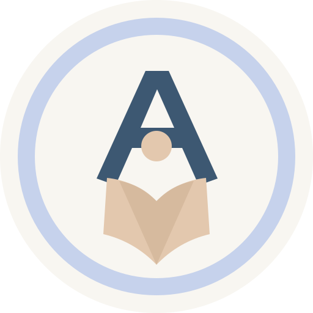

Aprender haciendo
Me interesa entender cómo funcionan las herramientas digitales y utilizarlas para resolver problemas reales. Disfruto trabajar en proyectos que combinan lógica, creatividad y tecnología.
PORTFOLIO PERSONAL · DESARROLLO WEB
Soy estudiante con interés en la programación y el desarrollo de soluciones digitales. Este espacio reúne algunos de mis trabajos y el proceso detrás de ellos.
const developer = {
nombre: "Lautaro",
intereses: [
"Programación",
"Desarrollo web",
"Tecnología"
],
objetivo: "Seguir creando"
};
developer.crear();01 / SOBRE MÍ
Me interesa entender cómo funcionan las herramientas digitales y utilizarlas para resolver problemas reales. Disfruto trabajar en proyectos que combinan lógica, creatividad y tecnología.
Investigar, probar alternativas, detectar errores y mejorar las soluciones paso a paso.
Seguir desarrollando mis conocimientos y sumar experiencia en programación y diseño de aplicaciones.
02 / HERRAMIENTAS
Herramientas y áreas relacionadas con los proyectos que estoy desarrollando.
Las tecnologías se muestran según los archivos y herramientas presentes en el proyecto Aulify.
03 / TRABAJOS
Una selección de trabajos y desarrollos en los que participé.

AULIFYAPRENDER, A TU MANERAUna plataforma que busca conectar estudiantes con profesores particulares.
Aulify reúne distintas herramientas para facilitar el encuentro entre personas que quieren aprender y quienes ofrecen clases. El código incluye páginas de presentación, registro e inicio de sesión, perfiles, catálogo de clases, reservas y apuntes, además de un backend desarrollado en PHP y archivos de base de datos SQL.
Nota: GitHub Pages publica sitios estáticos. Las funciones que necesitan PHP o base de datos requieren un servidor compatible y no se ejecutan desde esta publicación.
Este portfolio se puede ampliar a medida que se incorporen nuevos trabajos.
04 / CONTACTO
Este portfolio es una presentación de mis trabajos y de mi recorrido como estudiante. Gracias por visitarlo.
Volver al inicio ↑